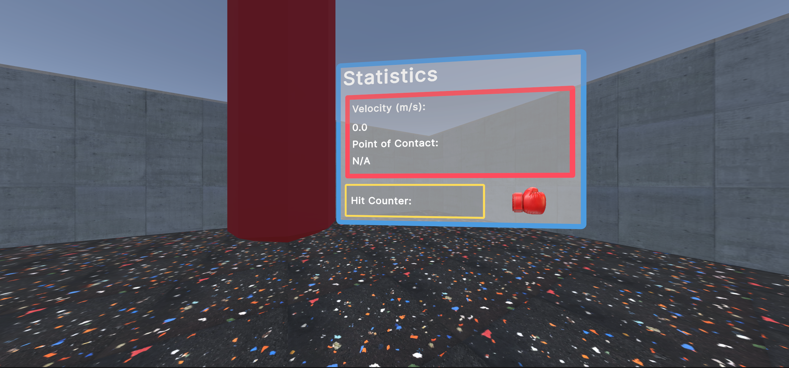
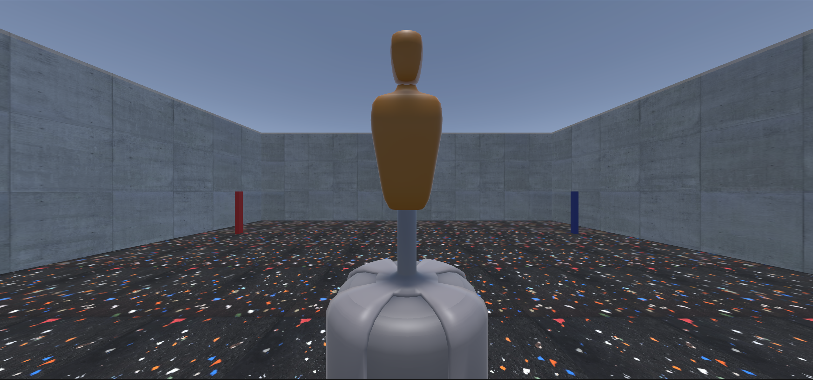
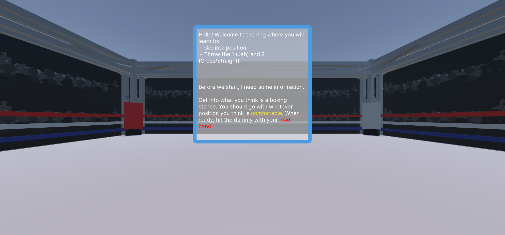

This game is meant to be a simple but immersive experience created to teach the basics of boxing through interactive gameplay and mechanics.
To make use of all the things we learned in class: physically based audio, virtual object interaction, IRL -> VR locomotion.
Game design is my focus not research so being able to learn new things in Unity is very important to me.
Code is commented and can be viewed in root/Assets/Scripts
To import these free models gITFast was used. Essentially its a package that allows for .gLTF files to be importated into Unity without corruption. Natively, the most common supported extensions used are .fbx and .obj.
This project relies on the SteamAudio package for physics-based audio. SteamAudio materials are used for the main punching bag scene to increase immersiveness.
The main package used was the Meta XR Core SDK. This package essentially downloads all the other Meta SDKs with it allowing you to start creating immediately. Another important package that was used is the Meta Movement SDK. This package enables you to map IRL full body movement to a Unity Model (like the ones found on Mixamo) in the game.
I created this simply because I thought it fit the theme well, I have no experience in boxing whatsoever. Thank you to Tony Jeffries for helping me understand basic technique. You can't teach something you dont't know anything about afterall.
The objects in the scene are all basic Unity building blocks other than the 3D models used. Textures are mainly just pictures from google, Unity automatically converts them into materials which is really nice. It makes it much easier to skin different objects since I just need to edit the material to give it the desired look.
UI Documents were used heavily to relay information to the user. Similar to using a canvas object but instead of doing everything by hand its almost like you're doing html. You can define a stylesheet, classes, ids, etc. just like you can with CSS. Thse UI Documents ended up turning out nicely.
One interesting component I used to create the Punching Bag scene is a configurable joint. It essentially allows for the range of motion that a bag should have when punched without getting detached from where its hanging.
For the Punching Bag scene, another interesting mechanic I used was turning the punching bag into a jelly. This allows it to deform, much like a very light punching bag would to a punch. This was done using the Jelly Mesh System package by roundyyy.
The Meta Movement SDK recently broke (like literally a few days ago). It simply just doesn't work anymore because a recent update to the package messed with the OVR Body script. Whenever you try to start the scene initialization fails and the entire project crashes. Because of that you can't use a full body avatar.
Unfortunately, volume is very low on the videos.


